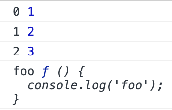

一、ES5 中数组的遍历方式
1）for
1 | let arr = [1, 2, 3] |
2）forEach()
1 | arr.forEach(function(elem, index, array) { |
forEach() 方法内不支持 break 与 continue。forEach() 方法没有返回值。forEach() 方法不会改变原数组的值。
3）map()
1 | let result = arr.map(function(value) { |
map() 方法返回每次函数调用的返回值组成的数组。map() 方法不会改变原数组的值。
4）filter()
1 | let result = arr.filter(function(value) { |
filter() 方法返回该函数返回 true 的项组成的数组。
5）some()
1 | let result = arr.some(function(value) { |
如果该函数对任意一项返回 true，则 some() 方法返回 true，否则返回 false。
6）every()
1 | let result = arr.every(function(value) { |
如果该函数对每一项都返回 true，则 every() 方法返回 true，否则返回 false。
7）reduce() 和 reduceRight()
reduce() 方法和 reduceRight() 方法会迭代数组所用项，然后构建一个最终的返回值。reduce() 方法从数组的第一项开始遍历到最后；reduceRight() 方法从数组的最后一项开始遍历到第一项。这两个方法都接受2个参数：一个在每一项上调用的函数 和 （可选的）作为归并基础的初始值。其中该函数接受4个参数：前一个值、当前值、项的索引、数组对象。这个函数的返回值会作为第一个参数自动传给下一项。
1 | let arr = [1, 3, 5, 3, 1] |
reduce() 方法没有给定第二个参数时，第一次迭代发生在数组的第二项上，此时函数的第一个参数是数组的第一项，第二个参数是数组的第二项。
1 | let arr = [1, 3, 5, 3, 1] |
reduce() 方法给定了第二个参数时，第一次迭代发生在数组的第一项上，此时函数的第一个参数是 reduce() 方法的第二个参数（即作为归并基础的初始值），第二个参数是数组的第一项。
补充
不要使用 for in 来遍历数组
1 | let arr = [1, 2, 3] |
输出如下：
很明显，这并不是我们想要的结果，因此不要使用 for in 来遍历数组。
二、ES6 中数组的遍历方式
1）find()
1 | let arr = [1, 2, 3, 2] |
find() 方法返回第一个返回值为 true 的元素。
2）findIndex()
1 | let res = arr.findIndex(function (value) { |
findIndex() 方法返回第一个返回值为 true 的元素的索引。
3）for of 与 values()、keys()、entries()
1 | let arr = [1, 2, 3] |